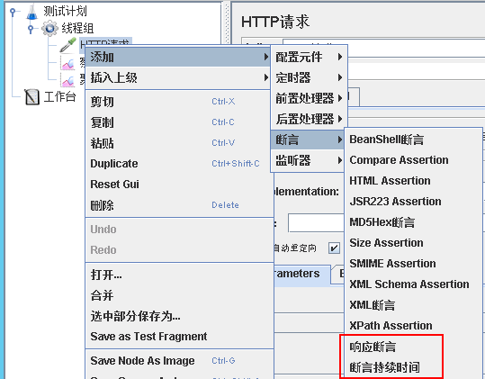
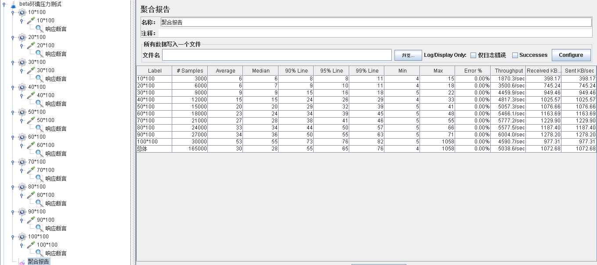
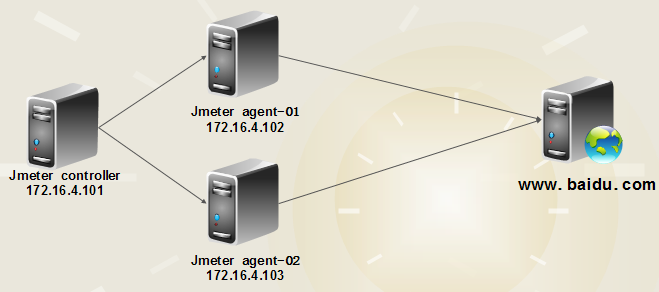

1.前言
对于运维工程师来说，需要对自己维护的服务器性能瓶颈了如指掌，比如我当前的架构每秒并发是多少，我服务器最大能接受的并发是多少，是什么导致我的性能有问题；如果当前架构快达到性能瓶颈了，是横向扩容性能提升大，还是纵向扩容性能提升大。
如果需要了解这些信息，需要在两方面下功夫，一个是对服务器进行性能测试，一个是对服务器进行性能监控。
通过对服务器进行性能测试：我们可以了解到当前架构的性能瓶颈，还可以对架构横向扩容和纵向扩容来进行测试，对后期的架构扩容提供数据参考。
通过对服务器进行性能监控：我们可以了解当前服务器的CPU、内存、IO等资源是否耗尽，我们可以在监控系统添加触发器，一旦服务器资源在快要达到瓶颈的时候，我们可以触发一个报警让运维人员来处理，也可以触发一个让架构进行自动化扩容（如果是云平台，直接调用api创建主机，ansible部署应用和程序）
本文将介绍下，我在工作中使用jmeter测试性能瓶颈的一些实践。本文做性能测试适用于移动互联网架构，非移动互联网架构有其他更好的测试方法。
2.Jmeter分布式压测介绍
在工作中使用jmeter做大并发压力测试的场景下，单机受限内存、CPU、网络IO，会出现服务器压力还没有上去，但是压测服务器已经由于模拟的压力太大死机了。为了让jmeter工具提供更强大的负载能力，jmeter提供了多台机器同时产生负载的机制，下面是架构图。
{kind=link}
原理：比如我在jmeter server配置线程数为10，循环次数为100，也就是会对测试服务器发起1000次请求，我有3台agent服务器，如果我在server端选择远程启动压力测试，那么每台agent都会对测试服务器发起10*100次请求，那么这次压力测试产生的请求就是10*100*3=3000次。
如果对原理不是很明白，看完下面的操作之后就会理解了。
3.Jmeter分布式压测环境搭建
3.1.搭建前说明
服务器环境说明：做性能测试可以直接在在云平台按需购买压力机，一旦测试结束释放压力机即可。
{kind=link}
分布式环境压力服务器要求：
- 需要server（控制机）和agent（压力机），agent搭建在linux（centos 6.5）服务器环境下，server搭建在windows（server 2012）环境下。
- 压力测试瓶颈大都在带宽上面，需要保证压力机的带宽要比服务器的带宽高，不然压力上不去。
- 需要保证agent和server都在一个网络中，且在多网卡环境需要保证启动的网卡都在一个网段。
- 需要保证server和agent之间的时间同步。
- 关闭防火墙。
3.2.Windows部署jmeter
（1）部署jdk环境,配置path变量，安装完成效果如下
{kind=link}
（2）直接去官网下载最新的二进制源码包即可。
（3）解压jmeter到指定目录，设置path变量，安装完成之后，在命令行运行jmeter命令，如果可以正常启动jmeter，说明环境配置ok。
{kind=link}
3.3.Linux部署jmeter
（1）下载安装
1 2 3 4 | wget http://mirrors.tuna.tsinghua.edu.cn/apache//jmeter/binaries/apache-jmeter-3.1.zipunzip apache-jmeter-3.1.zip -d /usr/local/cd /usr/local/ln -s apache-jmeter-3.1/ jmeter |
（2）配置启动脚本
1 2 3 4 5 6 7 8 9 10 11 12 13 14 15 16 17 18 19 20 21 22 23 24 25 26 27 28 29 | #!/bin/bash# chkconfig: 345 26 74# description: jmeter agentmyip=`ifconfig eth0 |awk '/inet addr/{gsub(/addr:/,"");print $2}'`cmd="/usr/local/jmeter/bin/jmeter-server -Djava.rmi.server.hostname=$myip"start(){ $cmd & }stop(){ jmeter_pid=`ps aux | grep jmeter-server | grep -v grep | awk '{print $2}'` for pid in $jmeter_pid;do kill -9 $pid done}act=$1case $act in 'start') start;; 'stop') stop;; 'restart') stop sleep 2 start;; *) echo '[start|stop|restart]';;esac |
（3）启动jmeter agent服务，验证是否监听1099端口
1 2 3 | [root@jmeter-agent-01 ~]# /etc/init.d/jmeter-agent start[root@jmeter-agent-01 ~]# netstat -lntp | grep 1099tcp 0 0 0.0.0.0:1099 0.0.0.0:* LISTEN 414/java |
3.4.分布式环境配置
（1）确保server和agnet安装正确。
（2）Agent启动，并监听1099端口。
（3）在server机器的jmeter安装目录下bin目录下，找到properties文件，修改远程主机选项，添加3个agent服务器的地址。
{kind=link}
（4）启动jmeter server，多网卡模式需要指定IP地址启动
1 | jmeter -Djava.rmi.server.hostname=192.168.10.61 |
（5）验证分布式环境是否搭建成功
1、jmeter启动之后在如下选项中,会出现你添加的远程主机列表
{kind=link}
2、创建一个请求测试：创建一个访问百度的请求，访问次数为一次，配置如下：
{kind=link}
{kind=link}
直接点击启动，是jmeter server机器发起一次请求，结果如下
{kind=link}
请求所有之前的请求数据之后，在选择远程全部启动，查看发起的请求就是三次，也就是每个agent服务器按照着server的配置，请求了一次。
{kind=link}
{kind=link}
如果你的环境在选择全部启动之后，没有报错，且发起请求数量和agent服务器数量一致，说明jmeter分布式压力测试环境搭建成功，可以进行测试了。
4.Jmeter断言
4.1.断言介绍
jmeter断言常用有两种，一种是响应断言，一种是响应时间断言，如果响应内容不满足断言的配置，则认为这次的请求是失败的。
响应断言：判断响应内容是否包含指定的字符信息，用于判断api接口返回内容是否正确。
响应时间断言：判断响应时间，是否超过预期的时间，用于判断api接口返回时间是否超过预期。
4.2.断言配置
（1）修改http为实际的api测试请求。
（2）断言添加方式：右击测试计划的http请求，选择添加à断言à添加响应断言和断言持续时间。

（3）配置响应断言：我们接口正常返回code值为2000，如果接口返回code值不是2000表示接口异常，为了测试，这里修改为接口返回code值不为2222则表示访问失败。
{kind=link}
（4）配置断言响应时间：设置请求接口时间超过1毫秒，则认为请求失败。
{kind=link}
（5）验证断言配置：发起http请求，由于返回内容code值不为2222，以及访问时间超过1毫秒，所以认为访问失败。
{kind=link}
{kind=link}
5.Jmeter变量配置
使用变量的场景举例：我们需要测试性能的曲线模型，也就是由轻压力慢慢变为重压力，来测试我们的性能拐点，这个时候jmeter就需要配置多个线程组，每个线程组需要设置http请求，比如下图；由于每次测试性能的曲线模型都是同一个接口，所以每次修改接口都需要修改http请求，这个时候如果使用了变量，就意味着每次修改api只需要修改api的变量即可。
{kind=link}
设置变量的方法：在测试计划中
{kind=link}
引用变量：
{kind=link}
6.Jmeter性能测试结果分析
下面是我执行一次性能曲线模型测试（请求从每秒3千递增到3万）的聚合报告：简单的看下，可以看到性能的拐点在每秒发起2.7万请求，TPS处理能力可以达到6000每秒，99%的用户响应时间在60毫秒，最大响应时间为71毫秒，性能还是不错的。
并发瓶颈：当请求从每秒2.7万递增到3万的过程中，我们的TPS由6000下降到了4500，可以看到并发瓶颈就在每秒最多处理6000请求
响应时间：我们可以看到TPS保持在3500或之下，99%用户用户的响应时间为11毫秒，随着TPS的升高，我们的响应时间也在随着升高，可以看到我们的TPS在每秒3500响应的时候，对响应时间是没有影响的。
注意这个只是我的业务其中的一个接口，我们生产有上百个接口，不同的接口返回数据还有代码逻辑，以及执行的sql均不相同，如果需要做性能测试，应该选择其中的热点接口，对每个接口进行性能测试，得到结果之后在进行具体的分析性能瓶颈到低是什么？

聚合报告参数说明：单位为毫秒
Label：定义HTTP请求名称
Samples：表示这次测试中发出了多少个请求
Average：平均响应时长——默认情况下是单个request的平均响应时长
Median：中位数，也就是50%用户的响应时长
90% Line：90%用户的响应时长
Min：访问页面的最小响应时长
Max：访问页面的最大响应时长
Error%：错误请求的数量/请求的总数
Throughput：默认情况下表示每秒完成的请求数（request per second）
KB/Sec：每秒从服务器端接收到的数据量
{kind=link}
7.测试中的监控
7.1.并发测试监控
并发测试直接发起指定数量的请求，比如一起发起10万请求看一下系统的处理能力，这个时候如果需要服务器的资源使用信息，就不能使用比如zabbix监控系统了，因为一般处理10万请求，对于我们来说20秒可以处理完毕，但是zabbix数据采集是每分钟一次，这样采集到的数据明显是不准的，这样就需要通过系统自带的监控命令，来实时查询服务器的性能，比如可以通过dstat或者glances等动态监控命令来分析系统的性能。

补充：不是测试每一个接口都需要进行这样的实时监控，比如过测试我的大部分接口TPS可达5000，但是其中一个接口只能达到2000这个时候就需要在测试的时候实时监控，看一下到底是什么原因导致性能上不去。是由于返回数据太大导致网络带宽被占满；还是sql执行时间太长导致数据库负载高，还是代码有问题导致web服务cpu占用高。
7.2.稳定性测试监控
稳定性测试就是持续不断模拟指定数量请求，来访问服务器，比如我每秒向测试服务器发起4000请求，持续12小时，来看看服务器会出现什么情况，这个时候就需要用到zabbix来进行监控了，下面是我做性能测试的部分监控接口，包含tomcat每秒请求，服务器入口流量，整个集群每分钟请求的http状态码统计，还有服务器资源使用信息。
{kind=link}
{kind=link}
{kind=link}
{kind=link}
8.Jmeter分布式压力测试
测试架构如下：

测试前的准备：
1、 防火墙关闭
2、 主机名解析
3、 时间同步
（1）压力机安装Jmeter，步骤和上面安装Jmeter步骤相同
（2）在controller机器的jmeter的bin目录下，找到jmeter.properties文件，修改远程主机选项
{kind=link}
[root@jmeter~]# vim /usr/local/jmeter/bin/jmeter.properties remote_hosts=172.16.4.102,172.16.4.103
（3）Agent启动服务，如果启动1099端口说明jmeter的压力机启动正常
[root@agent-01 ~]# /usr/local/jmeter/bin/jmeter-server & [root@agent-01 ~]# netstat -lntp | grep 1099 tcp 0 0 :::1099 :::* LISTEN 47783/java
（4）启动controller机器上的jmeter应用，选择菜单“运行”–>“远程启动”来分别启动agent，也可以直接选择“远程全部启动来将所有的agent启动
{kind=link}